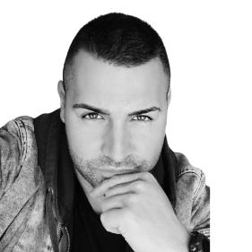

EXPERTO EN NEURODECISIONES

“LO MEJOR DE MÍ ES QUE PUEDO SACAR LO MEJOR DE TI “
SÍGUEME Y COMPRUÉBALO
We make decisions constantly. Some barely leave a trace. Others, without us realizing it, shape our lives. We choose how to react, what to avoid, what to cling to, when to move forward, and when to stop. And yet, many times something disconcerting happens: we decide one thing and do another.
We know what is good for us, but we don't do it.
We promise to change, but we repeat patterns.
We choose with our heads and act from somewhere else.
That is not incoherence. It is biology.
Before thought has time to intervene, the body has already decided. The nervous system evaluates whether there is threat or security. Emotions activate memories, learning, and physiological states that condition what we perceive as possible, dangerous, or desirable. Reason comes later, often only to explain what has already happened.
I call this process Neurodecisions.
Neurodecisions are automatic choices born from the interaction between emotion and biology. They do not respond to what you want to do, but to what your organism has learned to do to protect itself, adapt, or survive. That is why you can want to change and yet stay where you are. That is why you can desire to move forward and feel blocked.
Over time, some of these automatic responses are consolidated in the brain in a particularly powerful way. Emotional connections are created so deep that they even impose themselves over the cerebral cortex—the part responsible for conscious thought, reflection, and rational decision-making.
We call these connections Neurox.
A Neurox is an established neuro-connection that governs your behavior without you realizing it. It acts as an emotional shortcut: it decides fast, without context, without the present. It feeds on fear, prolonged stress, excess dopamine, or cortisol, and it is reinforced every time you repeat the same pattern. The longer it has been active, the harder it is to break through willpower.
That is why understanding what is happening to you is not enough.
That is why knowing "what you should do" is not enough.
Because you are not fighting against an idea, but against a deeply rooted emotional structure.
Most personal conflicts are born there: in Neurox that condition decisions, relationships, boundaries, self-esteem, and life direction; in a silent distance between what you consciously decide and what your system executes automatically.
My work in emotional psychology focuses precisely on that: identifying, understanding, and deactivating Neurox. Making visible what has been invisible until now. Understanding why your mind goes one way and your behavior another. Accompanying you to rebuild a more conscious relationship between emotion, biology, and decision.
It is not about controlling the mind.
It is about ceasing to be governed by it.
When you understand from where you are deciding, something falls into place. Action begins to align with intention. Not because emotions disappear, but because they stop silently taking command.
If you feel that you make good decisions but act against yourself, if you repeat patterns that you already understand but cannot manage to change, or if you sense there is something deeper conditioning your choices, you can contact me.
Sometimes, true change does not start by making a new decision, but by understanding what Neurox has been deciding for you.
For a long time, leadership has been understood as the ability to control variables, anticipate scenarios, and make correct decisions. That approach works when the environment is stable, predictable, and repeatable. It works in complicated systems.
But we do not live in complicated systems.
A complicated system may be difficult, but it is predictable. It has many parts, many rules, and many data points, but if you know the manual, the result is reproducible. An engine, a logistics chain, an algorithm. In these types of systems, Artificial Intelligence is invincible. It processes more information, makes fewer mistakes, and optimizes better than any human being.
A complex system is something else.
In a complex system, variables don't just add up; they interact. They change each other. They affect one another mutually. The behavior of the whole cannot be predicted by analyzing the parts separately. A human team, an organization, a society, or a sports locker room does not react the same way twice to the same situation.
In complex systems, there is no manual.
There is context.
There is emotion.
There is uncertainty.
That is why Artificial Intelligence, although powerful, does not lead complex systems. It can analyze patterns, but it cannot "feel" the system. It does not perceive invisible tensions, emotional climates, shared fears, or internal dynamics that do not appear in the data. And that is where human leadership remains irreplaceable.
A complex system works when "mass intelligence" emerges—when the group begins to think, decide, and adapt better than any individual separately. Not because everyone is brilliant, but because the system is well-organized emotionally and relationally.
Leadership in complex systems does not consist of imposing order, but of creating the conditions for the system to self-organize. It is about achieving a unity that is greater than the sum of its parts—transforming individualities into a living organism capable of adapting, learning, and responding under pressure.
This requires a different type of leadership.
You don't lead people like parts.
You lead emotions.
You lead collective states.
You lead situations never faced before.
When the system enters uncertainty, when there are no precedents, when pressure increases and known answers stop working, the leader can no longer lean on past solutions. They have to read the moment, understand the emotional temperature of the group, and decide without guarantees.
This is where many leadership models break down.
My work focuses on accompanying leaders and organizations to understand how complex systems work from the inside—reading invisible dynamics, activating collective intelligence, and sustaining the system when the context changes. Not through control, but through a deep understanding of human behavior in uncertain environments.
Leading a complex system is not about having all the answers.
It is knowing how the system responds when nobody has them.
If you lead people, teams, or organizations and feel that known recipes no longer work, if you face new scenarios for which there is no prior experience, or if you sense the problem is not in the people but in the dynamics of the system, you can contact me.
Because in complex systems, the difference is not made by who is in charge, but by who better understands what is happening.